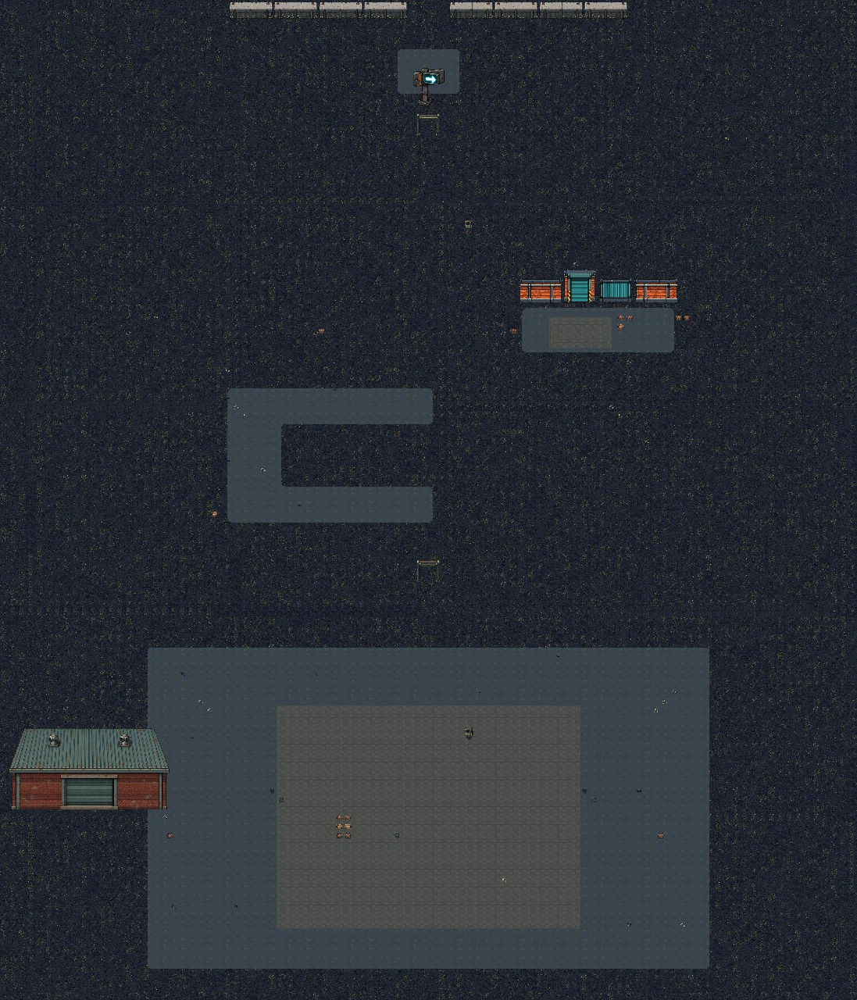
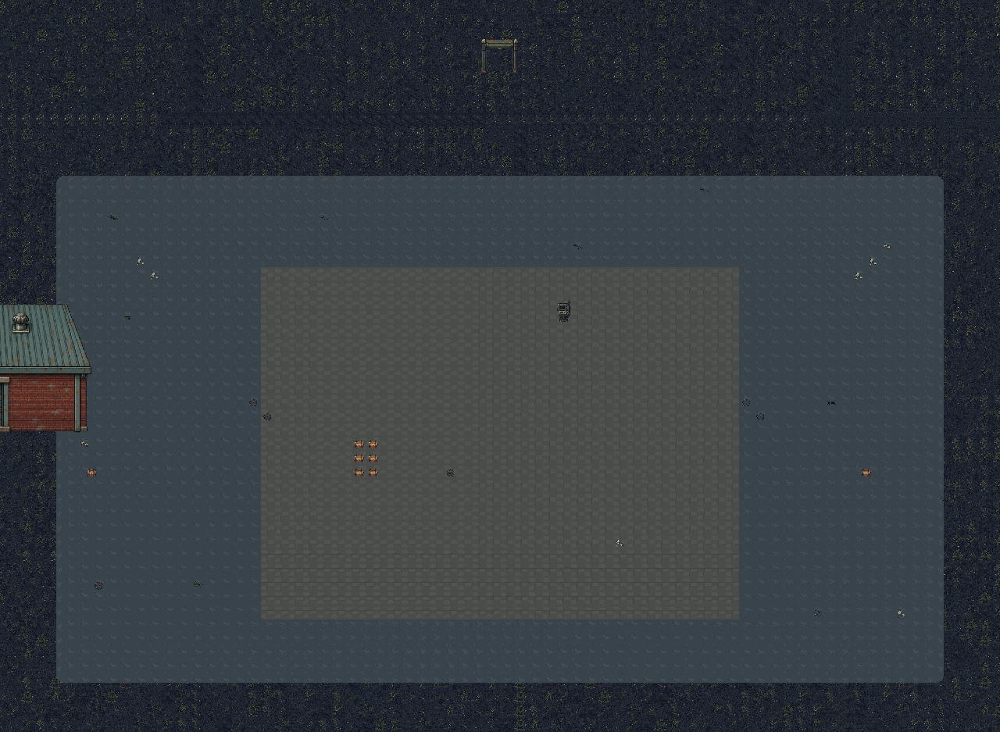
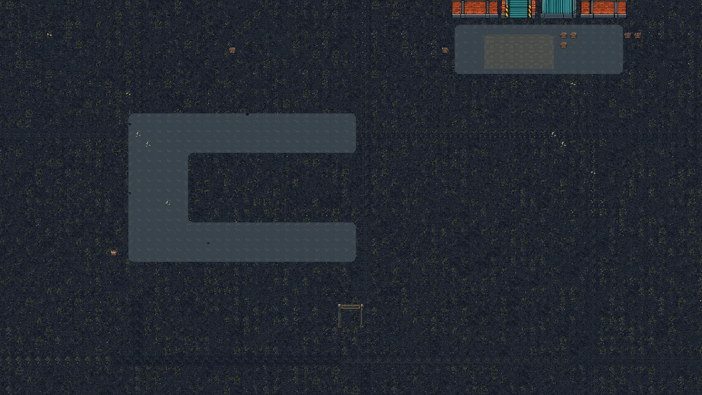
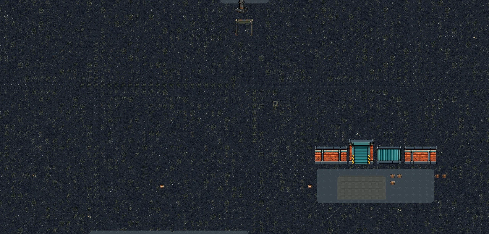
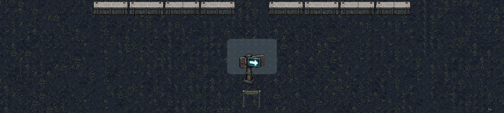
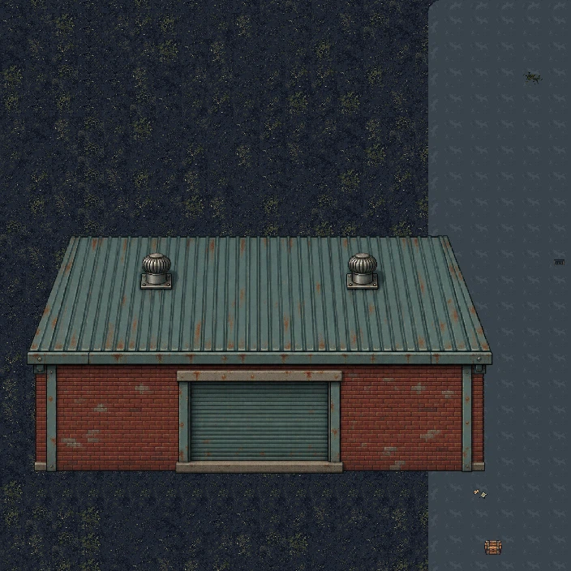
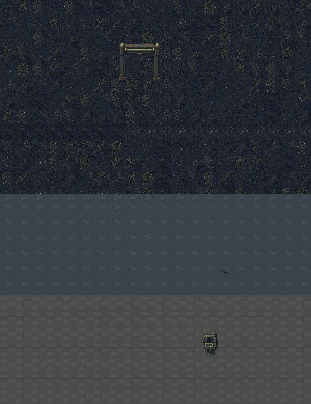
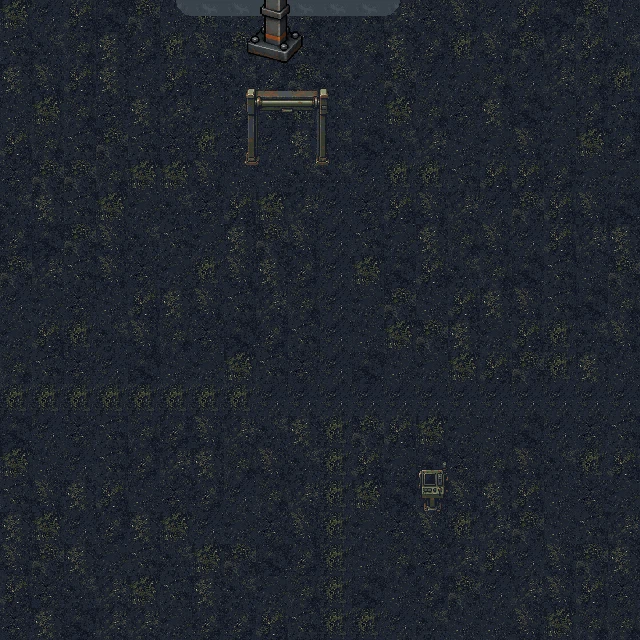

Authoring reference only. These are renders of an editable Tiled composition using existing, unaccepted industrial/coastal art studies. This is not production art, a playable candidate, runtime collision, or gameplay acceptance.
South-to-north progression: Service Court → Route Choice → Freight Yard / Gate B → Coastal Extraction. The two gate beats remain distinct; extraction is an arrival, not a third hold encounter.





The previous detached roof-and-facade assembly has been replaced by one coherent authored building asset. This crop is for visual review only; the composition has not yet passed visual acceptance.

These crops show the static source-art placements and nearby authoring blockers. They verify that the reused PNG frames appear in the Tiled render; they do not establish a seamless gate installation, accepted art, collision, or runtime gate behavior.


The overview remains sparse and repetitive; both routes need stronger scenery framing. Gate wall connections, native tile/coast joins and northbound signage are unaccepted. The retained direction plate points east. No actors or runtime lighting were reviewed.
Edit content/maps/escape_route_v1/escape_route_v1.tmj in Tiled. Scope, object IDs, source assets, render method and known limitations are documented in content/maps/escape_route_v1/README.md.